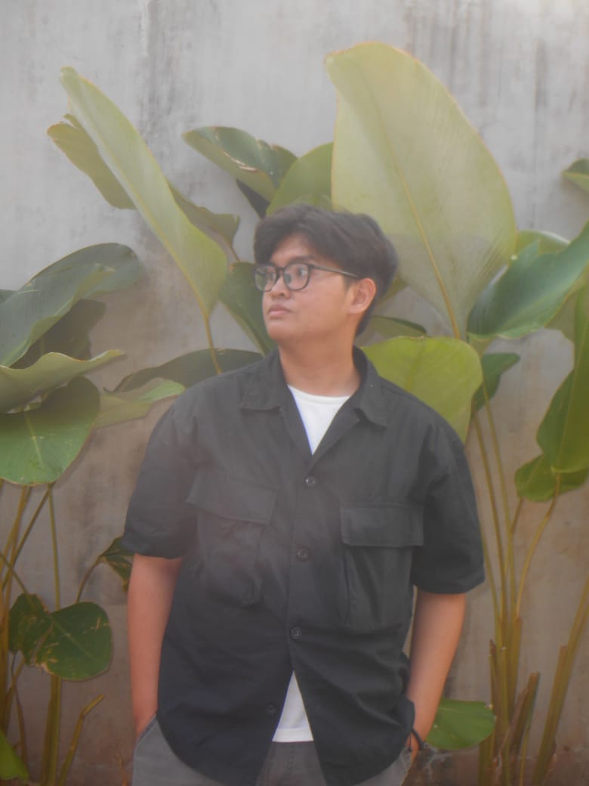
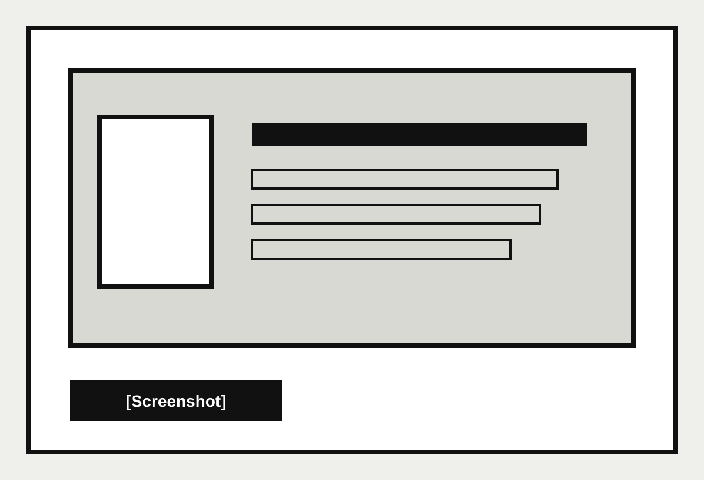

2025–sekarang
UIN Syarif Hidayatullah Jakarta
Jurusan: Teknik Informatika
Mahasiswa Teknik Informatika
Mahasiswa baru Teknik Informatika yang tertarik pada teknologi, aplikasi, pengolahan data, dan Internet of Things. Saya membangun kemampuan dalam pemrograman, logika komputasi, serta problem solving melalui proses belajar yang terstruktur.

Tentang Saya
Muhammad Faisal Ali Hafidz adalah mahasiswa baru Program Studi Teknik Informatika UIN Syarif Hidayatullah Jakarta yang memiliki ketertarikan pada teknologi dan pengolahan data. Ia memiliki pengalaman dasar dalam pengembangan aplikasi dan Internet of Things, serta aktif mengembangkan kemampuan pemrograman, logika komputasi, dan problem solving.
Ia dikenal sebagai pribadi yang teliti, cepat belajar, mampu bekerja secara terstruktur, dan memiliki motivasi untuk terus mengembangkan kemampuan serta memperoleh pengalaman profesional di bidang teknologi.
Skills
Pendidikan
2025–sekarang
Jurusan: Teknik Informatika
2022–2025
Kurikulum Merdeka
Proyek

Projek kuliah
Sedang berlangsung
Merancang, memprogram, dan mendesain game RPG 2D berjudul “Aruna Adventure”.
Aplikasi Android
Maret–April 2026
Merancang aplikasi Android untuk mengelola data stok barang.
Projek P5 SMAN 33 Jakarta
September 2024–Februari 2025
Merancang dan memprogram produk IoT bersama anggota kelompok.
Kontak